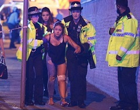
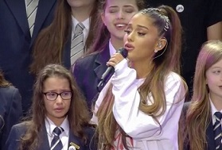

|
El 22 de mayo de 2017, se produjo una explosión en el
Manchester Arena, en la ciudad de
Mánchester (Reino Unido), al final de un concierto de la cantante.
La explosión se produjo alrededor de las 22:33, hora local (UTC+1), causando al menos 22 muertos y 59 heridos. Se informó que un hombre en solitario
realizó el ataque usando un artefacto explosivo improvisado en lo que se sospecha fue un ataque suicida. Al día siguiente, el
Estado Islámico de IrakEstado Islámico de Irak y el L
evante se autoproclamaba autor del atentado. Fue el atentado terrorista más mortífero en el Reino Unido desde los atentados de Londres de 2005.
|

|
|

|
Poco después del atentado la artista publicó en su twitter:
"Simplemente rota, desde lo más profundo de mi corazón, lo siento muchismo, no tengo parablas".
Pocos días depués la traumatizada artista suspendió su gira
Dangerous Woman Tour y regreso a Florida en búsqueda del
apoyo de su familia.
Sin embargo Grande no se quedó con las manos cruzadas, ella visitó a cada uno de los heridos en el ataque, a las familias afectadas,
y asumió el costo del funeral de los fallecido en el atentado.Y a decir verdad sus fans tampoco se quedaron quietos, estos
elevaron su pasado éxito "One last time" a la cima de los tops musicales en honor a las personas fallecidas, y como benificio adicional,
las ganancias del sencillo se ofrendarán a las victimas.
El 4 de junio Se realizo el "One love Manchester" un concierto benefactorio donde varios artistas tales como Justin Bieber, the Black Eyed Peas, Coldplay, Miley Cyrus, Marcus Mumford, Niall Horan, Little Mix, Katy Perry, Take That, Imogen Heap, Pharrell Williams, Robbie Williams, Liam Gallagher,
y por supuesto la misma Ariana Grande, participaron para reunir fondos para las familias afectadas; en este mismo evento Grande afirmó la publicación del sencillo
Somewhere Over the Rainbow en honor a las personas fallecidas, también afirmó la continuación de la suspendida gira
Dangerous Woman Tour por Europa y como dato curioso, ella y todo su equipo de producción se tatuaron una abejita simbolozando
nuevamente los afectados en este trágico evento.
|